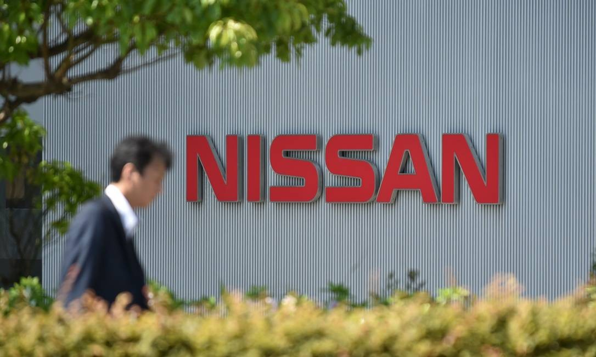
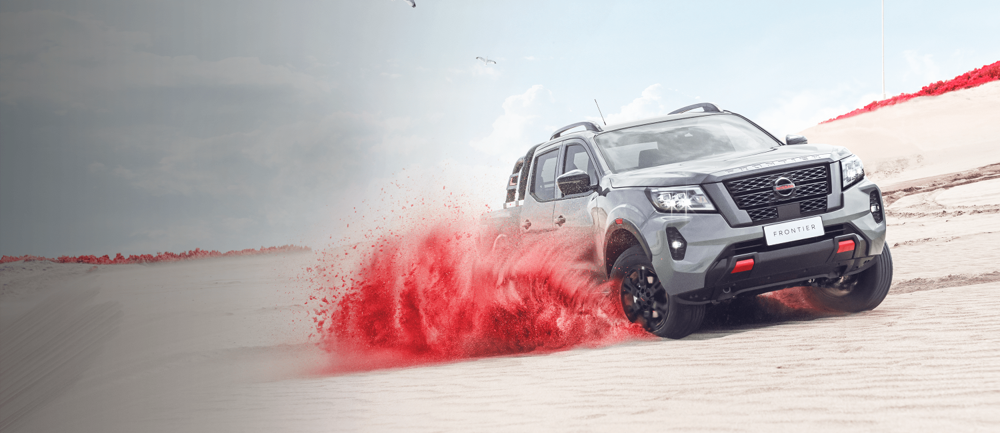
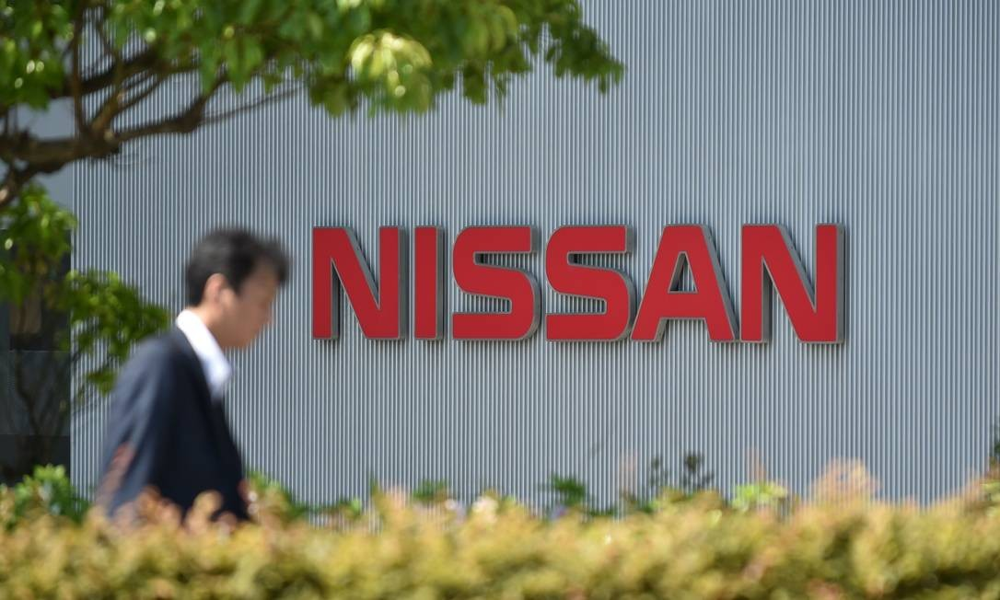
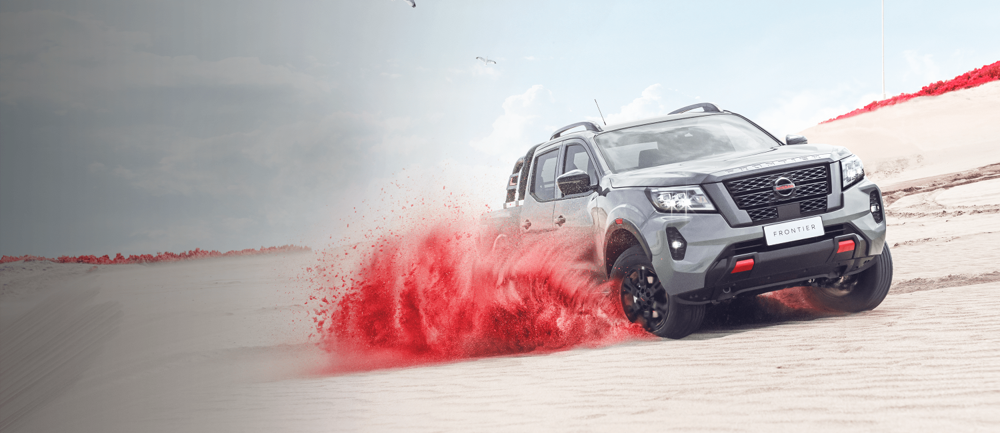

Confira toda a jornada da Nissan aqui
Nossa HistoriaA Nissan Motor Company, Ltd. é uma fabricante multinacional japonesa de automóveis com sede em Yokohama, Japão. A empresa vende seus veículos sob as marcas Nissan, Infiniti e Datsun. A Nissan é a terceira maior montadora do Japão.
Confira as novidades Nissan de 2024
Nova Nissan Frontier 2024: robustez, tecnologia e 6 anos de garantia:
- Motor 2.3 biturbo diesel de 190 cv e 45,9 kgfm de torque, o mais potente da categoria.
- Câmbio automático de 7 velocidades com opção de trocas manuais sequenciais.
- Tração 4x4 com seletor eletrônico, reduzida e bloqueio do diferencial traseiro.
- Suspensão traseira multilink, que garante conforto e dirigibilidade superior.
- Capacidade de carga de até 1.045 kg e capacidade de reboque de até 3.500 kg.
Conforto e estilo:
- Interior renovado com bancos de couro, volante multifuncional e ar-condicionado digital.
- Teto solar elétrico (único na categoria).
- Faróis de LED com regulagem de altura e luzes diurnas de LED.
- Rodas de liga leve de 18 polegadas.
6 anos de garantia!
Compare suas diferentes versões.
Conheça todas as versões do Nissan Sentra 2024 disponíveis para você
Confira